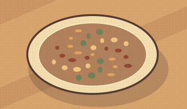

Dinner
Chili-loaded potato
Put the chili you froze earlier back to work. This is the shortest dinner of the week.
20 min · 1 serving

Ingredients
Plus one serving of Turkey & black bean chili.
Retailer links are options, not a live stock check.
Make it
- Thaw one serving of turkey chili in the fridge overnight.
- Cube the potato and simmer in water until tender, then drain.
- Add the chili to the same pot and reheat to 165°F. Top with Greek yogurt or cheddar.